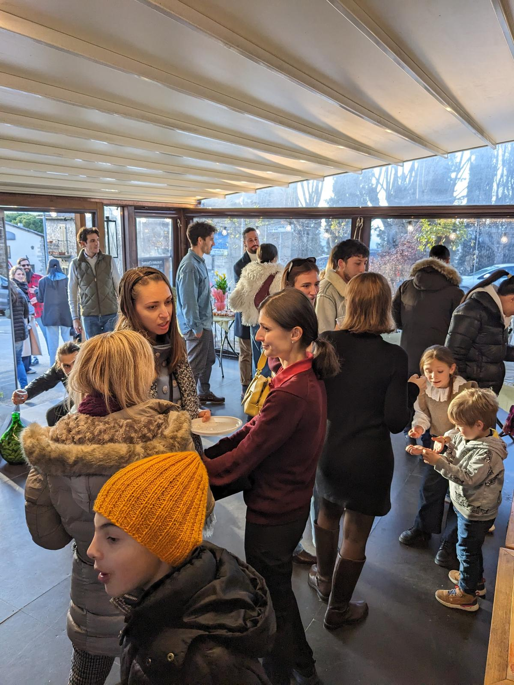
Bar · Enoteca · Tabacchi
Bar Dante Alighieri
Quarant'anni di piazza, un nuovo capitoloForty years on the square, a new chapter
Nel cuore della piazza di Radda in Chianti: dal caffè del mattino allo spritz della sera.In the heart of the village square in Radda in Chianti: from the morning espresso to the evening spritz.
Aperto ora · fino alle {t}Open now · until {t}Chiuso oraClosed nowOggi chiusoClosed today
La cartaThe menu
Cucina toscana, semplice e golosaTuscan cooking, simple and generous
Dal caffè del mattino all'aperitivo: piatti della tradizione, bruschette, panini e vini al bicchiere. Prezzi in euro.From morning coffee to aperitivo: traditional dishes, bruschette, sandwiches and wines by the glass. Prices in euro.
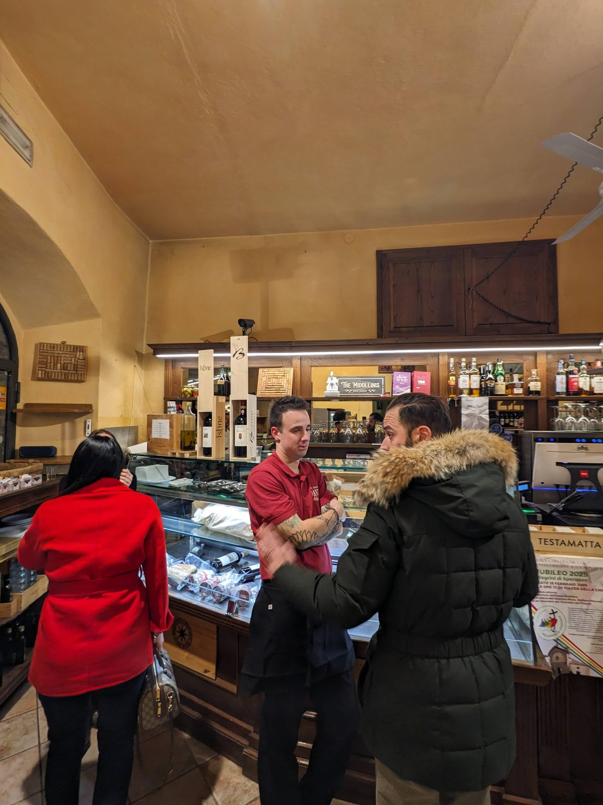
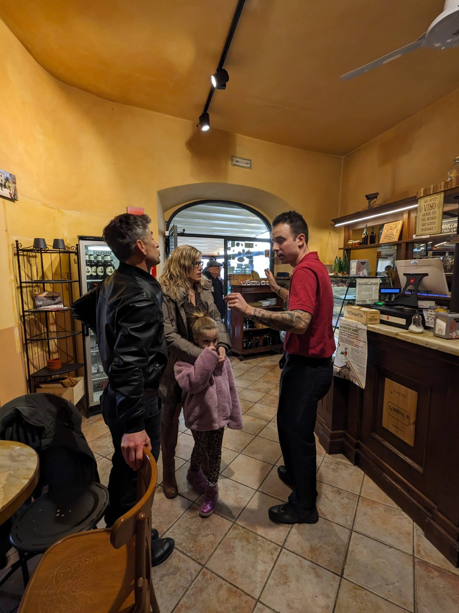
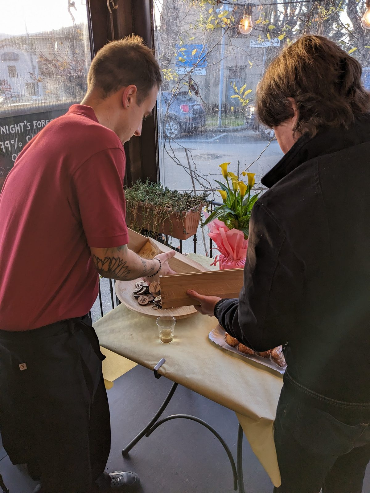
TavoloTable
Scegli con + e −, poi invia l'ordine su WhatsApp: il bar ti risponde lì. Si paga al banco, come sempre.Pick with + and −, then send your order on WhatsApp — the bar replies there. Payment is at the counter, as usual.
Chi siamoAbout us
Quarant'anni di piazza, un nuovo capitoloForty years on the square, a new chapter
Per quarant'anni il Bar Dante Alighieri è stato di Fabrizio e Carolyn, che hanno servito generazioni di raddesi e di viaggiatori. Dicono i clienti che la bruschetta di Fabrizio fosse «la più buona del Chianti» — e la sua fama non si è mai spenta.For forty years Bar Dante Alighieri belonged to Fabrizio and Carolyn, who served generations of locals and travelers. Guests still talk about Fabrizio's famous bruschetta — “the tastiest in Chianti.”
Da febbraio 2025 il bar è di Claudio e Virginia Midollini, una giovane coppia di qui. Hanno raccolto il testimone con rispetto e tanta voglia di fare: la stessa accoglienza di sempre, un capitolo nuovo.Since February 2025 the bar has been run by Claudio and Virginia Midollini, a young local couple. They have taken up the torch with respect and plenty of energy: the same warm welcome, a new chapter.
Dall'espresso del mattino agli spritz della sera sul nostro dehors, nel cuore della piazza: venite a sedervi con noi.From the morning espresso to evening spritzes on our patio in the heart of the square: come and sit with us.
Fabrizio e Carolyn, dopo la pensione, gestiscono l'Enoteca Toscana, a due passi da noi in Via Roma 4.Fabrizio and Carolyn, now retired from the bar, run the Enoteca Toscana wine shop just next door at Via Roma 4.
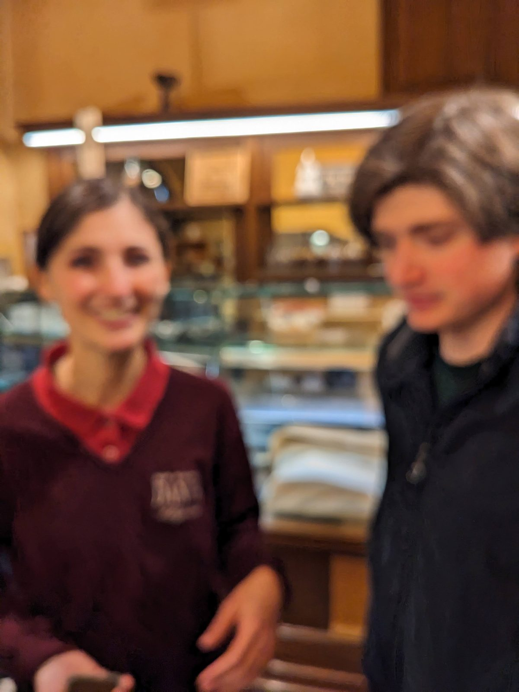
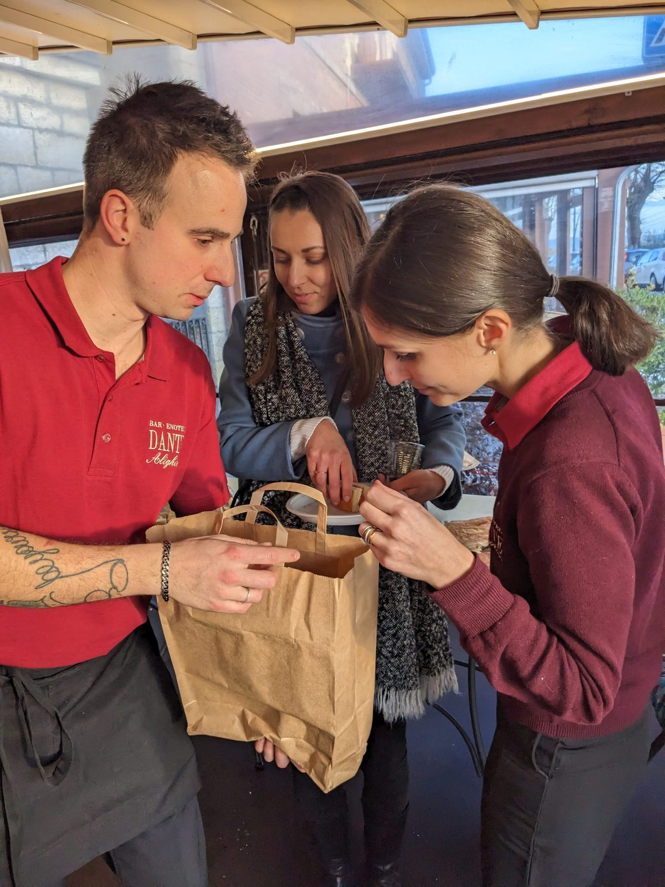
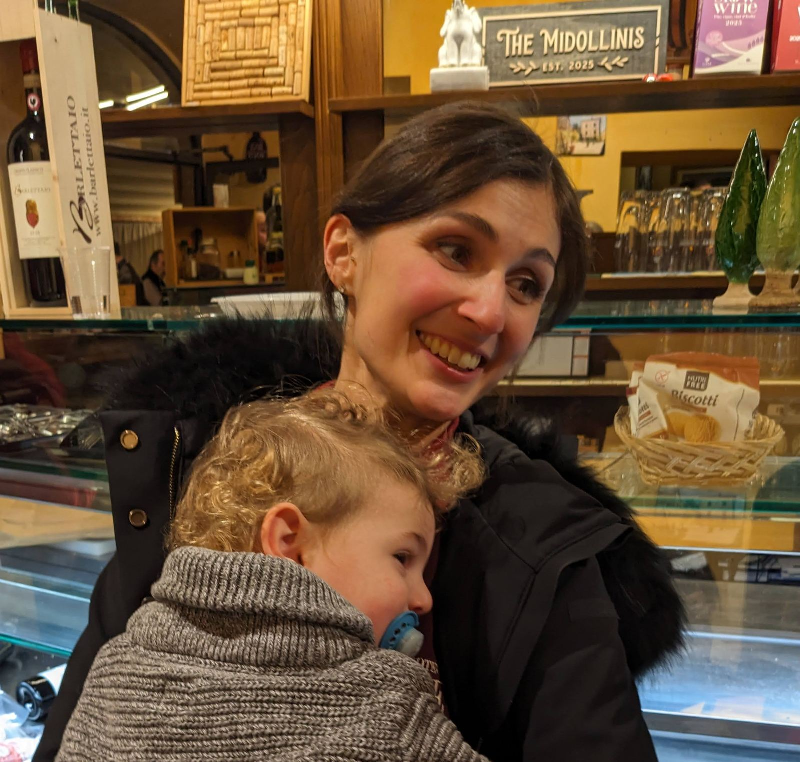
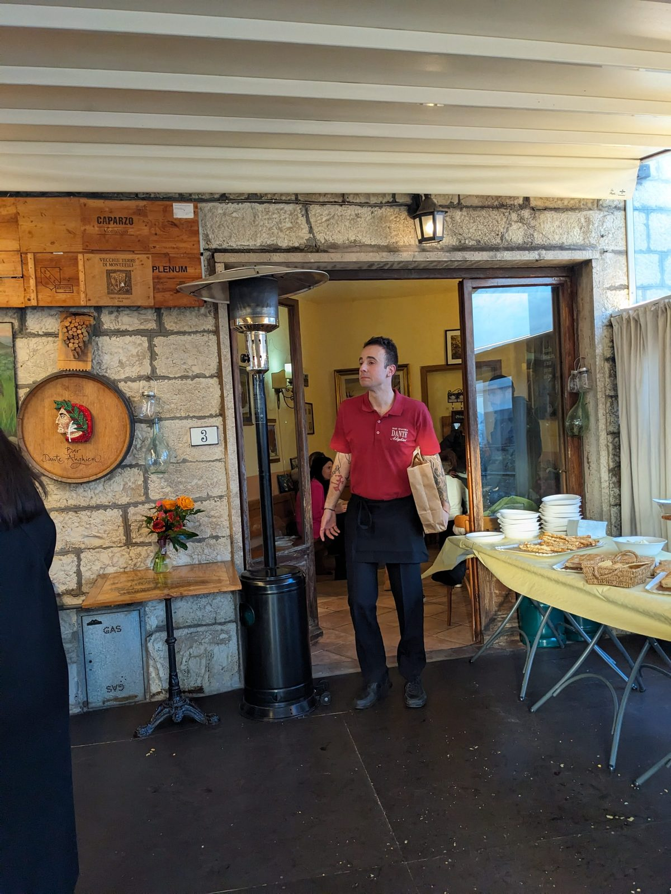
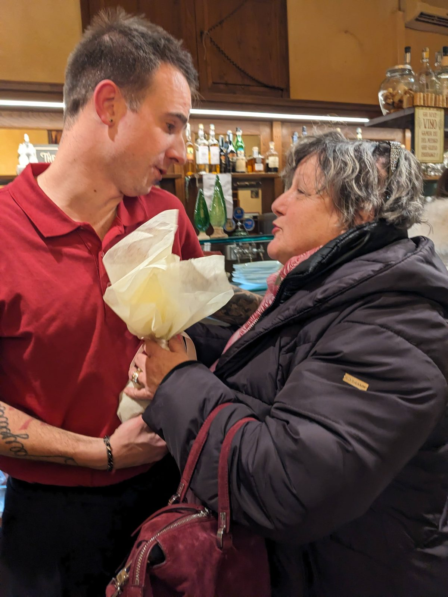
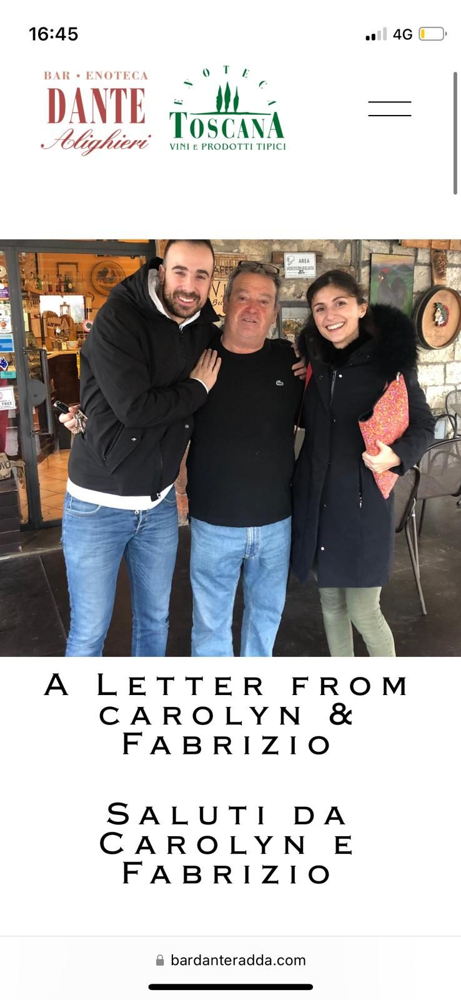
Dante
Una piazza che porta il nome di un poetaA square named after a poet
Il nostro indirizzo è Piazza Dante Alighieri. Dante (1265–1321), il poeta fiorentino della Divina Commedia, fu condannato all'esilio nel 1302 e non rivide mai più Firenze. Nel Paradiso scrisse quanto sa di sale il pane degli altri: «come sa di sale lo pane altrui». Qui, almeno, il pane è nostro.Our address is Piazza Dante Alighieri. Dante (1265–1321), the Florentine poet of the Divine Comedy, was sentenced to exile in 1302 and never saw Florence again. In Paradiso he wrote of how salty other people's bread tastes: “come sa di sale lo pane altrui.” Here, at least, the bread is ours.
Guardate bene la nostra lista dei panini: è una piccola antologia dantesca.Look closely at our sandwich list: it is a small Dante anthology.
- Inferno
- la prima cantica della Commediathe first part of the Comedy
- Beatrice
- la guida di Dante nel ParadisoDante's guide through Paradiso
- Convivio
- il «Banchetto» di Dante, un trattato rimasto incompiutoDante's “Banquet”, a treatise he left unfinished
- Divina
- la Divina Commediathe Divine Comedy
- Amore
- «L'amor che move il sole e l'altre stelle», l'ultimo verso del Paradiso“L'amor che move il sole e l'altre stelle,” the last line of Paradiso
Vedi i paniniSee the sandwiches
Il quiz e il verso del giorno sono disponibili solo in italiano e in inglese. · The quiz and today's verse are available in Italian and English only.
Il verso del giornoToday's verse solo italiano e ingleseItalian and English only
Nel mezzo del cammin di nostra vita mi ritrovai per una selva oscura
Midway along the journey of our life I found myself in a dark wood
L'inglese è una resa letterale del bar, non una traduzione letteraria.The English is the bar's own plain, literal rendering — not a literary translation.
Ogni strada ha un punto in cui non si vede più dove porta. Una sosta aiuta a ritrovare la direzione.Every road has a point where you can't see where it leads. A pause helps you find your bearings. — Inferno I, 1
Per approfondire, canto per canto:To go deeper, canto by canto: Digital Dante (Columbia University) · Dante Project (Princeton)
Quiz solo italiano e ingleseItalian and English only
Che girone sei?Which circle are you?
«Nel mezzo del cammin di nostra vita»
GalleriaGallery
Un po' di RaddaA taste of Radda
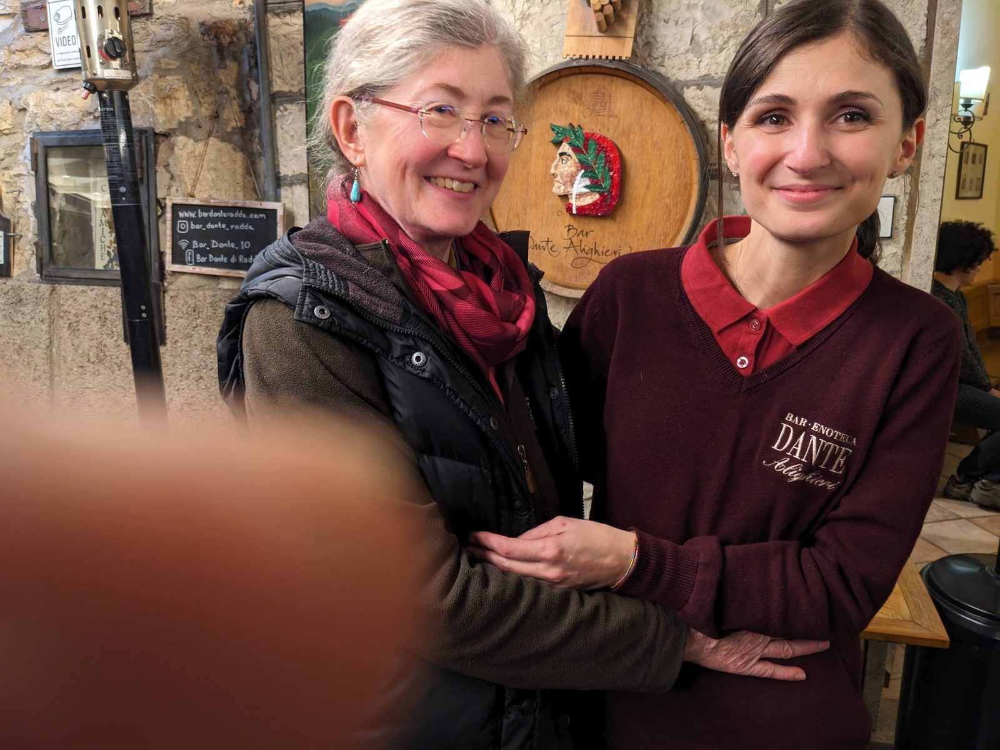
I viniWines & drinks
Dal caffè al caliceFrom coffee to wine glass
BarBar
Espresso, cappuccino, spritz e le birre artigianali locali.Espresso, cappuccino, spritz and local craft beers.
EnotecaEnoteca
- Chianti Classico DOCG
- Chianti Classico Riserva & Gran Selezione
- Super Tuscans
- Vernaccia di San Gimignano
- Brunello di Montalcino
- Vino Nobile di Montepulciano
- Vin Santo
Chiedete al banco per l'etichetta del giorno e per un consiglio.Ask at the counter for today's bottles and a recommendation.
Dove siamoFind us
Nel cuore della piazzaIn the heart of the village square
Piazza Dante Alighieri 1
53017 Radda in Chianti (SI)
Italia
Wi-Fi · Copiata!Copied!
OrariHours Aperto ora · fino alle {t}Open now · until {t}Chiuso oraClosed nowOggi chiusoClosed today
| LunedìMonday | 6:30 – 21:30 |
|---|---|
| MartedìTuesday | ChiusoClosed |
| MercoledìWednesday | 6:30 – 21:30 |
| GiovedìThursday | 6:30 – 21:30 |
| VenerdìFriday | 6:30 – 21:30 |
| SabatoSaturday | 6:30 – 21:30 |
| DomenicaSunday | 8:15 – 21:30 |
Dopo la visitaAfter your visit
Com'è andata?How was your visit?
Ci fa piacere saperlo. Scrivici in privato su WhatsApp, oppure racconta la tua esperienza su TripAdvisor: come preferisci.We would love to hear it. Message us privately on WhatsApp, or share your experience on TripAdvisor — whichever you prefer.
Racconta su TripAdvisorReview on TripAdvisor Scrivici su WhatsAppMessage us on WhatsApp